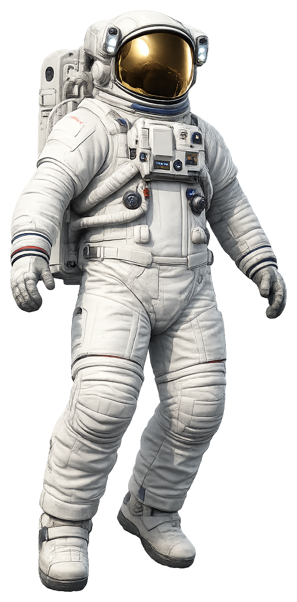

STANDBY
OXYGEN SUPPLY
The PLSS provides breathing oxygen to the astronaut.
ASTRONAUT TRAINING PROGRAM
Welcome, Astronaut Candidate. Prepare for your training missions and explore the science of space.
FLIGHT SYSTEMS / PRE-EVA CHECK
SIMULATED TELEMETRY
Review the main systems of an astronaut's spacewalk suit. Run the training diagnostic to verify each system. These are educational status indicators, not readings from real spacecraft equipment.
The PLSS provides breathing oxygen to the astronaut.
The suit maintains pressure around the astronaut's body.
Water circulation through the garment helps remove body heat.
The suit system removes exhaled carbon dioxide from circulating air.
Radio equipment supports communication between the astronaut and the team.
SYSTEM CHECK NOT STARTED
Training sequence: five educational system checks.
IMPORTANT: A real EVA suit is not a complete radiation shield. Radiation protection requires separate monitoring and mission procedures.
TRAINING CENTER
04 MODULES
Complete a pre-EVA systems check, then test your knowledge of spacesuit technology.
Explore simulated movement in a microgravity environment.
Explore the lunar surface and conduct scientific research.
Manage a lunar research base. Balance life support, power, food and radiation protection.
ASTRA TRAINING LOG
0 / 4 ASSESSMENTS
Complete a module assessment to begin your training record.
BEST SCORE: 0 / 20
ASTRA KNOWLEDGE DATABASE
8 RESEARCH AREAS
Explore the research behind ASTRA. Choose a training area to read its facts, open NASA references, and take a short topic quiz.
KNOWLEDGE CHECK
QUESTION 1 / 2
Science facts are summarised from the NASA references listed in the uploaded research brief. ASTRA's scores, timers, resource levels, and event penalties are game simulations—not NASA measurements. NASA has not approved or endorsed ASTRA.
MODULE 01 / FLIGHT SYSTEMS
QUESTION 1 / 4
Prepare for your first assessment.
MODULE 02 / MICROGRAVITY
TIME: 60s
Recover five research objects inside an orbital laboratory. Apply gentle thrust with W, A, S, D or the arrow keys. The astronaut keeps drifting after you release a key. Hold SPACE to use the stabilisation assist.

MOVEMENT MODEL: illustrative free-drift physics. This is a simplified game simulation, not a real ISS training system.
Environment artwork: AI-generated illustrative ISS-style interior, not an actual NASA photograph.
MISSION DEBRIEF
All research objects recovered successfully.
MODULE 03 / LUNAR OPERATIONS
TIME: 90s
Walk across the lunar site and recover three geological samples. Use A/D or LEFT/RIGHT to move. Press W, UP or SPACE to perform a controlled low-gravity hop.
LUNAR MOVEMENT MODEL: reduced-gravity hops are exaggerated for playability. The Moon's surface gravity is about one-sixth of Earth's; this display is not an engineering simulation.
Environment artwork: AI-generated illustrative lunar scene, not an actual NASA photograph.
LUNAR MISSION DEBRIEF
ASTRA / OUTPOST COMMAND
LUNAR BASE ALPHA
Commander, maintain the lunar research base for five mission days. Your decisions affect the survival and operation of the outpost.
Resource levels are simplified training units (0–100).
MISSION DAY 01 / 05
Your first decision awaits.
UNEXPECTED EVENT DETECTED
COMMANDER'S MISSION DEBRIEF
ASTRA / MISSION KNOWLEDGE ASSESSMENT
QUESTION 1 / 5
Questions are based on the ASTRA NASA-sourced research brief. See the NASA Facts Library for references.
ASSESSMENT REPORT
Your best score is saved in this browser on this device.
MISSION CONTROL MESSAGE
Select a training module to begin your journey.